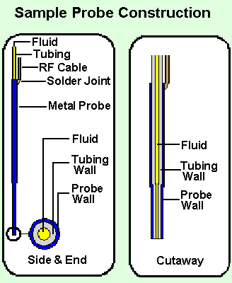
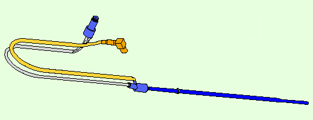
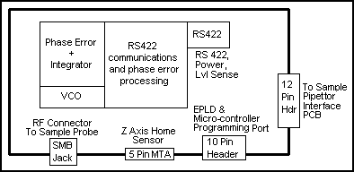
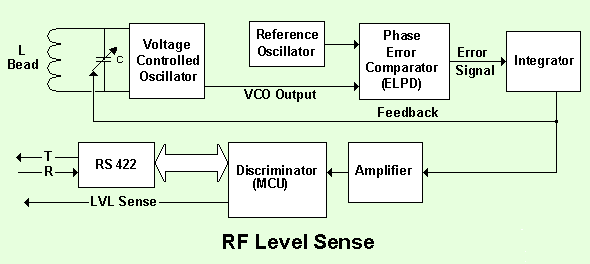

RF Level Sense Operating Principles
Purpose
This procedure details the operating principles for RF level sense feature.
Sample Probe Details
The sample probe consists of Teflon® tubing inside a metal probe with a shielded wire soldered to the end for connection to the RF level sense circuit board.


Operational Overview
The metal probe (sheath) is used to detect fluid level and provides mechanical stability for the tubing it contains. The metal probe is connected to an LC tank oscillator circuit that detects a change in its feedback loop when disturbed by touching the fluid surface. The RF level sense PCB is mounted on the gantry. The RF level sense PCB allows the sample probe to detect fluid level in a sample tube or vessel. The PCB provides a trigger signal to the Z-axis motor, that is controlled by the MCC, to terminate vertical movement after fluid is detected.
Level Sense Concept
Although the level sensing used on the sample probe is named RF level sense, it is a change in the capacitance of the sample probe that actuates the level sensing circuitry by de-tuning the LC oscillator. The shifting of the frequency of the circuit creates a trigger signal. The LC tank signal on the probe is a 6 MHz, 100 millivolt sine wave with a DC offset of 1.65 V DC.
- No physical movement of the probe (no electrically-induced vibrations).
- Only a single, signal wire feeds the signal to and from the probe.
- The low-profile end surface of the metal probe that reduces wear from the probe entering fluids.
Diagnostics
Level sense software detects when the probe tip touches the fluid surface and halts the sample pipettor Z-axis motion. Operators can perform a level sense check using a diagnostic screen.
RF Level Sense PCB
The RF level sense PCB monitors the sample probe through a low-power SMB coax connector. The probe current is less than 10 mA. The PCB requires less than 150 mA at 24 V DC.
Level Sense Detection Specs
The RF level sense PCB detects the fluid level when the sample pipettor is inserted into a sample tube or vessel. The PCB provides a TTL compatible (active low) level sense detect signal to the motion control PCB driving the pipettor Z-axis motor. This signal arrives via a 12-pin ribbon connector located on the RF level sense PCB and is made available on the sample pipettor interface PCB.
Sensitivity Control
The level sense threshold is adjustable in the software, for troubleshooting purposes, through the serial communications link to the PCB. The drive electronics automatically compensates for changes in temperature, humidity, mounting variations, cabling capacitance, and the like.
Z-Axis Home Sensor Interface
The PCB provides an interface connection to the Z-axis optical home sensor. This connection is a 5-wire interface requiring +5 V DC and 30 mA. The output of the sensor is routed to the sample pipette interface PCB via a 12-pin ribbon cable.
General Description
When an assay is performed, test tubes containing patient sample enter the DxI instrument through the sample presentation unit (SPU). The function of the sample pipettor is to aspirate a specific amount of sample and dispense it into one or more sample storage vessels (SV). As the sample pipettor is lowered into the sample tube, the RF level sense PCB sends an interrupt signal to the z-axis motor controller when the probe tip touches the fluid surface, halting vertical movement. By stopping pipettor movement before complete immersion into the sample, external carryover is reduced. When fluid is detected, the pipettor moves down in stages for every 50 µL of fluid that are aspirated. The number of steps is based on the rack configuration, which is one reason correct rack configuration is vital.

Operating Principles Diagram

Overview
Level sense works by detecting the effect that the parasitic capacitance of a fluid sample has on a resonant L-C tank circuit. When the probe tip touches the surface of the sample, the sample capacitance is added to the capacitance of the tank circuit, causing it to oscillate at a lower frequency. The RF level sense PCB detects this shift in frequency and asserts the LVL-sense signal.
Phase Error Comparator
The VCO produces a digital output at the same frequency and phase as the tank circuit oscillations. This signal is compared to a fixed 6 MHz reference oscillator using a phase error comparator.
When the phase and frequency difference between the two signals nears zero, the PLL stabilizes. Fluid-level detection can be performed by monitoring sudden small changes in the phase error output of the PLL.
When the probe tip is in the fluid, the total combined impedance of the LC oscillator circuit is changed. The new impedance includes the fluid. The phase error comparator output is changed and thus, the integrator applies a correcting voltage to the variable capacitor. This capacitance change returns the LC impedance to the impedance required to match the 6 MHz reference oscillator frequency.
Signal Processing and Level Sense
The integrated phase-error signal is capacitively coupled to an amplifier where it is compared to a programmable reference to determine when a fluid surface is detected. The amplified phase error signal is fed to a microcontroller (MCU) where an integrated A/D converter samples the signal and performs a moving average, of n (for example, 4) samples, to minimize the effects of transients. The average is then compared to a threshold to determine whether the probe has entered fluid. The threshold level is operator selectable for trouble shooting purposes.
LED Indicators
- Green LED has two functions:
- On power-up it indicates a successful reset when on; software and hardware reset.
- After power-up it indicates successful communication. The LED changes state (on to off; or off to on) after each successful communication packet is received from the HOST(AU).
- Red LED has two functions:
- On power-up it indicates a successful reset when on; software and hardware reset.
- After power-up it indicates the level sense status. When the LED is on, the board has found level sense. The LED does not return to off until the next time level sense is enabled by the HOST (AU). When level sense is enabled, the LED is off.
Electrostatic Protection
The sample probe is protected from electrostatic charges.
Z-Axis Home Interface
The Z-axis home sensor is a 5-wire optical sensor. The diode power input requires a minimum of 1.5 V DC at 9 mA. The output of the sensor is TTL compatible.
The Z-axis home sensor pin-outs (JP4) are:
| Pin # | Signal |
|---|---|
| 1 | +5 VDC from MCC |
| 2 | GND from MCC |
| 3 | OUTPUT (Z Home) |
| 4 | DIODE POWER 5 V from MCC |
| 5 | GND from MCC |
RF Level Sense Interface
The RF level sense interface is provided through a twelve-conductor ribbon cable that connects to the sample pipettor interface.
The RF level sense pin-outs (JP1) are:
| Pin # | Signal |
|---|---|
| 1 | GND |
| 2 | +24 V DC |
| 3 | Not Connected |
| 4 | GND |
| 5 | LEVEL_SENSE |
| 6 | Z_HOME |
| 7 | RCV(+) |
| 8 | RCV(-) |
| 9 | XMT(+) |
| 10 | XMT(-) |
| 11 | +5 V DC from MCC (Z home) |
| 12 | GND from MCC from MCC (Z home) |
In-Circuit Serial Programming Port
The RF level sense PCB provides for in-circuit programming of both the EPLD (U7) and the microcontroller / MCU (U5) through a 10-pin ribbon connector located on-board. A single port is used to program both the MCU and the EPLD devices, allowing the PCB to be programmed while on the system.
The programming port pin-outs are:
| Pin # | Signal |
|---|---|
| 1 | TCK |
| 2 | GND |
| 3 | TDO |
| 4 | +5 V DC |
| 5 | TMS |
| 6 | PGC |
| 7 | MCLR |
| 8 | PGD |
| 9 | TDI |
| 10 | GND |
Software Overview
The host system initiates all communications. Every command or packet received from the host receives a single acknowledge packet from the RF level sense PCB. Both the initial command from the host and the acknowledge have several different formats. The RF level sense PCB will toggle the green LED (D5) after each packet received that has a valid check sum.
All messages from the host are in a variable-length data packet partitioned as shown here:
| Header | Length | Data | Checksum |
|---|---|---|---|
| 1 byte | 1 byte | 0 to 16 bytes | 1 byte |
The header field contains information on the type of data transaction being initiated. The types of possible transactions or headers are:
| Transaction Type | Header (Binary) |
|---|---|
| Reserved (Not Implemented) | 00000000 |
| Acknowledge (ACK) | 00010000 |
| No Acknowledge (NAK) | 00100000 |
| Action (Not Implemented) | 00110000 |
| Write Parameters | 01000000 |
| Read Parameters | 01010000 |
Length Field
The length field contains a 1 byte value denoting the length of the data packets that follow. The allowable range is 0 to 16 bytes. Values received by the RF level sense PCB from the host above 16 generate a NAK response.
Data Field
- Command Parameters
- 1 Byte 0 to 15 Bytes
Command Field
This field denotes the specific command being issued or acknowledged to or from the RF level sense PCB.
Parameters Field
This field is used to pass information to or from the RF level sense PCB. The exact meaning of the parameters changes depending on the type of command being issued or acknowledged.
Checksum Field
- On the host side:
- All bytes that make up the transmission (except the check sum itself) are totaled.
- The sum (truncated to 1 byte) is bit-by-bit inverted, and then one is added to the byte (2 complement).
- On the receiver side:
- All of the bytes received from the host are added.
- If the resulting sum (truncated to 1 byte) is zero, there are no errors, and the board toggles the green LED (D5). If the resulting sum is not zero, the RF level sense PCB responds with NAK.
Command Processing
Commands are processed as they are received, to allow for back-to-back transmissions from the host. Commands that are sent to the RF level sense PCB timeout when there is more than 3.5 ms between bytes received from the TX (host side) line.
Initialization
At startup, a default is loaded for threshold. The AU replaces this threshold at system initialization from a threshold in the AU initialization files. Actual level sense values can be determined (approximately) by reading the average A/D value.
On power-up, the level sense runs an initialization routine. If all self-tests pass, both the green LED and the red LED are turned on and the board is ready for level sense. After the AU is initialized, the status of the LEDs change, depending on the state of the machine (refer to the section on LED indicators).
Level Sense Operation
- TP7 Level Sense
- 0 = Level Sense Detected (not enabled)
- 1 = Level Sense Enabled (not detected)